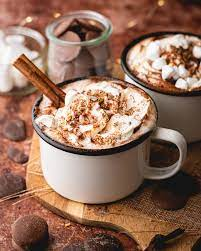

Hot Chocolate

Description
This recipe is made with a combination of cocoa powder and chocolate chips. The cocoa powder adds the distinct “hot cocoa” flavor, and the chocolate chips melt into the mixture making this drink extra creamy, rich and luxurious. A splash of vanilla extract rounds out all that chocolaty flavor and makes this what I consider the perfect Homemade Hot Chocolate.
Ingredients
- milk
- sugar
- cinnamon stick
- vanilla caviar
- chocolate
- cocoa powder
Steps
- Using a sharp knife, chop the chocolate into small pieces.
- Add the cocoa powder, chopped chocolate, sugar, vanilla bean caviar (or extract) cinnamon stick and pinch of salt to a medium saucepan.
- Warm it over medium-low heat until the chocolate has melted. Serve it immediately.